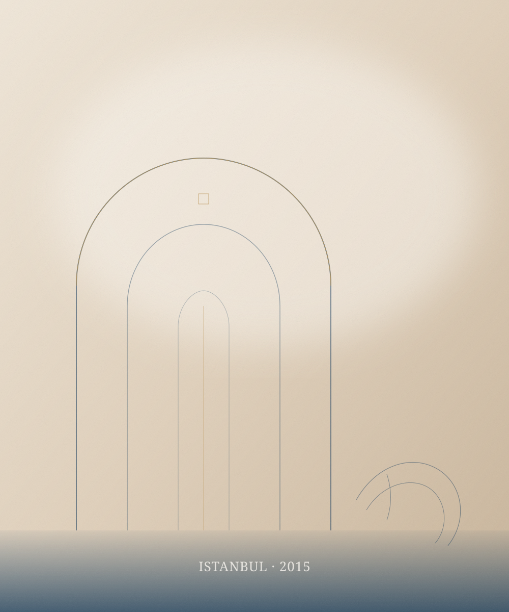
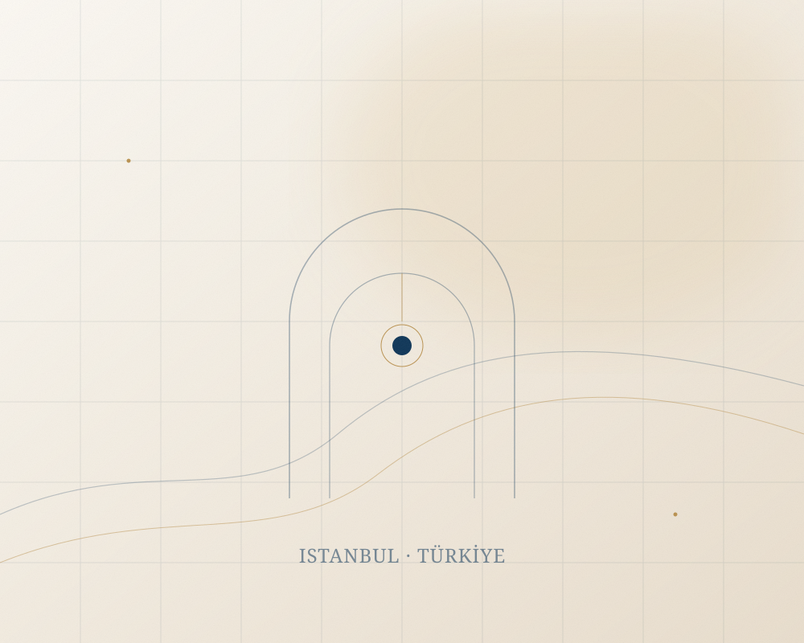

عيادة أوريك،
حيث يبدأ الاستماع.
لم نؤسس عيادة لتقديم إجراءات فقط، بل مساحة يشعر فيها المريض بالأمان والراحة، ويجد فيها من يشرح له الخيارات بصدق قبل أن يطلب منه قراراً.

عيادة أوريك عيادة متخصصة في تجميل الأسنان والجراحات التجميلية وزراعة الشعر وجراحات السمنة، تقع في إسطنبول. منذ 2015، اخترنا أن نجمع بين دقة الطب الحديث ودفء الرعاية العائلية، لا أن نختار أحدهما.
نؤمن أن الجمال الحقيقي لا يمحو الملامح، بل يبرزها. ولهذا نرفض الحلول الجاهزة، ونبدأ كل حالة بتقييم مستقل: ما الذي يمكن تحقيقه؟ ما البدائل؟ ما الحدود والمخاطر؟ وكيف تكون المتابعة بعد العلاج؟
نعمل ضمن الأطر التنظيمية للرعاية الصحية في تركيا، ونحرص على أن يكون كل قرار طبياً ومدروساً، لا تجارياً أو متسرعاً. ونستقبل مرضى من تركيا ومن عدة دول، مع مراعاة اختلاف اللغة والثقافة واحتياجات السفر.

لم نردها مجرد عيادة تقليدية جافة، بل مكاناً تشعر فيه بالأمان والراحة. نجاحنا الحقيقي لا يقاس بعدد العمليات، بل بالابتسامات الصادقة والراحة التي تلمسونها من أول لقاء.
نرى الجمال في عفوية ملامحك، لا في تغييرها.

فلسفتنا بسيطة: أن تبقى أنت، لكن بثقة أكبر. لا نطارد صورة نمطية أو مقاساً واحداً، بل نبحث عن النقطة التي يصبح فيها التغيير طبيعياً ومتناسقاً مع ملامحك.
هذا يعني أننا قد نوصي بإجراء أقل مما طلبت، أو نرفض إجراءً لا يخدم صحتك. يعني أيضاً أن نشرح المخاطر كما نشرح الفوائد، وأن نضع المتابعة جزءاً من الخطة لا خدمة إضافية.
نؤمن أن العلاقة الجيدة تبدأ بالوضوح: ماذا نعرف، وماذا لا نعرف، وما الذي يحتاج إلى تقييم إضافي. وبهذا الوضوح تُبنى الثقة التي تدوم بعد انتهاء العلاج.
تعرّف على خدماتنالماذا يختارنا المرضى؟
ليست قائمة وعود، بل طريقة عمل نلتزم بها في كل مرحلة — من أول رسالة إلى آخر متابعة.
تعامل إنساني
Human firstنستمع للمخاوف والتطلعات، ونتعامل مع كل مريض كفرد من العائلة، لا كرقم في جدول.
تجربة ضيافة متكاملة
Comfort & logisticsنساعد في ترتيبات الوصول والإقامة والتنقل قدر الإمكان، لتكون رحلتك أقل انشغالاً وأكثر راحة.
تقنيات آمنة
Modern technologyأجهزة حديثة وتخطيط دقيق، مع أولوية للسلامة والنتيجة الطبيعية على حساب السرعة.
رفقة مستمرة
Continued careلا تنتهي علاقتنا بانتهاء العلاج؛ يبقى فريقنا على تواصل للاطمئنان والمتابعة بعد العودة.
ثلاث مراحل، ووعد واحد.
أن تعرف ما يحدث، ولماذا، وما الخطوة التالية — في كل مرحلة.
قبل
استشارة وتقييم وتشخيص، وشرح للبدائل والحدود والمخاطر، ثم خطة واضحة.
أثناء
تنفيذ العلاج في بيئة طبية آمنة، مع تواصل مستمر وفريق يجيب على أسئلتك.
بعد
متابعة قريبة في فترة التعافي، ومواعيد لاحقة، ووسيلة تواصل تبقى متاحة.
تعرّف علينا أكثر.
إن كان لديك سؤال عن العيادة أو عن مسار علاجي معين، يسعدنا أن نسمعه منك.

CARE